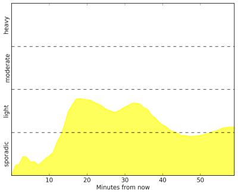
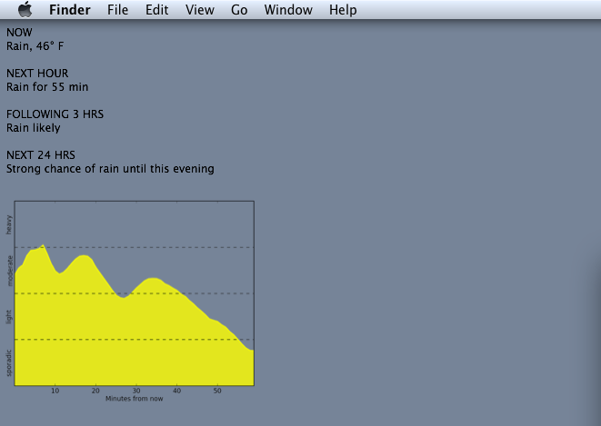
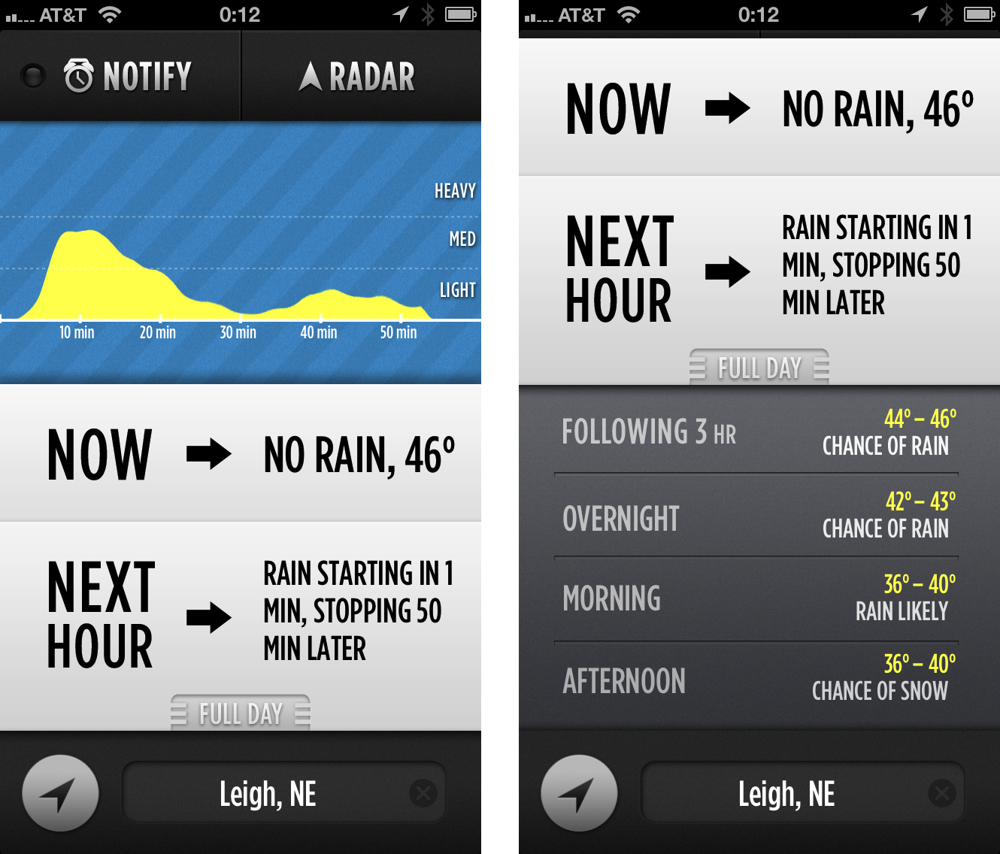
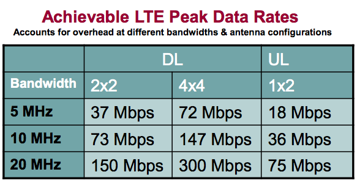
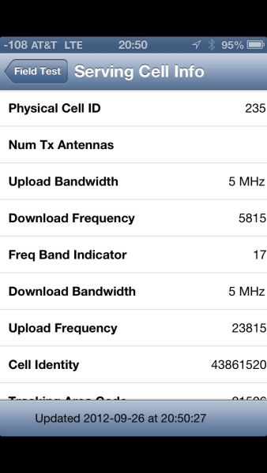

<!DOCTYPE html PUBLIC "-//W3C//DTD XHTML 1.0 Strict//EN"
"http://www.w3.org/TR/xhtml1/DTD/xhtml1-strict.dtd">
<html xmlns="http://www.w3.org/1999/xhtml" lang="en">
  <head>
        <meta charset="UTF-8" />
    <link rel="alternate" type="application/rss+xml" title="RSS" href="/rss.xml" />
    <meta name="viewport" content="width=device-width" />

    <!-- <link href="assets/css/meny.css" rel = "stylesheet"> -->
    <link href="theme/css/main_pelican.css" rel="stylesheet">

    <link rel="apple-touch-icon-precomposed" href="media/blog_logo.png"/>
    <link rel="shortcut icon" href="media/blog_logo.png"/>
    <link rel="icon" type="image/png" href="media/blog_logo.png" sizes="16x16 32x32">
    <link href='http://fonts.googleapis.com/css?family=PT+Sans:400,700|Merriweather:300,900' rel='stylesheet' type='text/css'>

    <title>Jay Hickey</title>

    <!-- Google Analytics -->
    <script type="text/javascript">
    var _gaq = _gaq || [];
    _gaq.push(['_setAccount', 'UA-32102758-1']);
    _gaq.push(['_setDomainName', 'none']);
    _gaq.push(['_setAllowLinker', 'true']);
    _gaq.push(['_trackPageview']);

    (function() {
      var ga = document.createElement('script'); ga.type = 'text/javascript'; ga.async = true;
      ga.src = ('https:' == document.location.protocol ? 'https://ssl' : 'http://www') + '.google-analytics.com/ga.js';
      var s = document.getElementsByTagName('script')[0]; s.parentNode.insertBefore(ga, s);
    })();
    </script>


<!--
    <link href="http://fonts.googleapis.com/css?family=Arimo:400,700|Inika" rel="stylesheet" type="text/css" />
    <link rel="stylesheet" type="text/css" href="./theme/bootstrap.css" />
    <link rel="stylesheet" type="text/css" href="./theme/pastie.css" />
    <link href="" type="application/atom+xml" rel="alternate" title="Jay Hickey Atom Feed" />
        <link href="rss.xml" type="application/rss+xml" rel="alternate" title="Jay Hickey RSS Feed" />
        
     -->

  </head>

  <body>
    <div class="meny-contents">


        <div id="mastheadbackground">&nbsp;</div>

        <section id="posts">

            <div id="masthead">
                <h1><a href="/">Jay Hickey</a></h1>

                <p id="description">Technology, life, and fascinating web encounters.</p>

                <nav>
                    <a href="about">About</a>
                    &nbsp;
                    |
                    &nbsp;
                    <a href="highlights"> Highlights</a>
                    &nbsp;
                    |
                    &nbsp;
                    <a href="twitter"> Twitter</a>
                </nav>
            </div>
        <div id="container">

            
                <article class="link">
    
                <header>
                    <h2>
                                                    <a href="http://www.bbc.co.uk/news/world-asia-20614593"
                            rel="bookmark">Driving School for Dogs in New Zealand</a>
                            <span class="linkarrow">&rarr;</span>
                                                                       </h2>

                    <p>
                        <time datetime="" pubdate="pubdate">December 06, 2012</time>
                        &#0020;
                        <a class="permalink" title="Permalink to Driving School for Dogs in New Zealand" href="2012/12/driving-dogs">&#x271c;</a>
                    </p>
                </header>

                <p>People are teaching dogs how to drive Mini Coopers. </p>
<p>I'm making a mental note to stay off the road if I ever go to New Zealand.</p>

            </article>
            <div class="fin">&#x2110;&#x210b;</div>

                <article class="link">
    
                <header>
                    <h2>
                                                    <a href="http://www.autoextremist.com/current/2012/11/26/the-autoextremist.html"
                            rel="bookmark">Product Desirability = Profitability</a>
                            <span class="linkarrow">&rarr;</span>
                                                                       </h2>

                    <p>
                        <time datetime="" pubdate="pubdate">November 26, 2012</time>
                        &#0020;
                        <a class="permalink" title="Permalink to Product Desirability = Profitability" href="2012/11/product-desirability-profitability">&#x271c;</a>
                    </p>
                </header>

                <p>Fascinating article on how the VW Group has become so successful. Craziest part—the company employs 310,000 more people, built 200,000 fewer vehicles in 2012, <em>and</em> recorded $3.1 billion more in profits this year than General Motors.</p>

            </article>
            <div class="fin">&#x2110;&#x210b;</div>

                <article class="link">
    
                <header>
                    <h2>
                                                    <a href="http://instagr.am/p/SV_xJVtONa/"
                            rel="bookmark">The Best Way to Spend Thanksgiving</a>
                            <span class="linkarrow">&rarr;</span>
                                                                       </h2>

                    <p>
                        <time datetime="" pubdate="pubdate">November 22, 2012</time>
                        &#0020;
                        <a class="permalink" title="Permalink to The Best Way to Spend Thanksgiving" href="2012/11/the-best-way-to-spend-thanksgiving">&#x271c;</a>
                    </p>
                </header>

                <p></p>
<p>(Via <a href="http://instagram.com">Instagram</a>)</p>

            </article>
            <div class="fin">&#x2110;&#x210b;</div>

                <article class="link">
    
                <header>
                    <h2>
                                                    <a href="http://www.technologyreview.com/news/507321/cellular-data-network-for-inanimate-objects-goes-live-in-france/"
                            rel="bookmark">Wireless for "Other" Electronics</a>
                            <span class="linkarrow">&rarr;</span>
                                                                       </h2>

                    <p>
                        <time datetime="" pubdate="pubdate">November 14, 2012</time>
                        &#0020;
                        <a class="permalink" title="Permalink to Wireless for "Other" Electronics" href="2012/11/wireless-for-other-electronics">&#x271c;</a>
                    </p>
                </header>

                <p>Interesting post by Technology Review about French startup SigFox, and their new approach to creating a wireless network: </p>
<blockquote>
<p>SigFox is focused on connecting cheap sensors and “dumb” home appliances to the Internet. The goal is to make all kinds of appliances and infrastructure, from power grids to microwave ovens, smarter by letting them share data. The general concept, known as “the Internet of Things,” has been discussed in academic circles for years, but it has yet to come to life.</p>
</blockquote>
<p>This is, without a doubt, a service I see on the horizon. I wouldn't be surprised to see a similar infrastructure start up in the U.S. very soon. SigFox is already about to go live in France. With how dumb and greedy all of the cellular carriers are, it's very unlikely any of them will cost-effectively fill the (on the rise) wireless appliance market. Plus SigFox' solution is cheaper, provides much lower energy consumption, and operates over a much longer range:</p>
<blockquote>
<p>A conventional cellular connection consumes 5,000 microwatts, but a two-way SigFox connection uses just 100. The company also says it is close to rolling out a network to the whole of France—an area larger than California—using just 1,000 antennas. Deployments are beginning in other European countries, and discussions are under way with U.S.-based cellular carriers about teaming up to roll out its technology stateside, says Nicholls. “SigFox can cover the entire U.S. territory with around 10,000 gateways, whereas a traditional cellular network operator needs at least several hundred thousand,” he says. This should make deployment significantly faster, and cheaper.</p>
</blockquote>
<p>The cost is further reduced thanks to their use of license-free frequency spectrum. SigFox thinks it should be possible to charge a fee of around $1 a year per device<sup id="fnref:dollar"><a class="footnote-ref" href="#fn:dollar" rel="footnote">1</a></sup>. The downside, of course, is the extremely low bandwidth of 100 bits/s. But for most devices, that doesn't matter. SigFox mentions potential applications ranging from Internet-connected bathroom scales to electrical smart grids and parking lot monitoring. I'm very excited for the potential of this.</p>
<div class="footnote">
<hr />
<ol>
<li id="fn:dollar">
<p>Yes. <em>One dollar.</em>&#160;<a class="footnote-backref" href="#fnref:dollar" rev="footnote" title="Jump back to footnote 1 in the text">&#8617;</a></p>
</li>
</ol>
</div>

            </article>
            <div class="fin">&#x2110;&#x210b;</div>

                <article class="link">
    
                <header>
                    <h2>
                                                    <a href="http://www.macstories.net/stories/automating-ios-how-pythonista-changed-my-workflow/"
                            rel="bookmark">How Pythonista Changed My Workflow</a>
                            <span class="linkarrow">&rarr;</span>
                                                                       </h2>

                    <p>
                        <time datetime="" pubdate="pubdate">November 13, 2012</time>
                        &#0020;
                        <a class="permalink" title="Permalink to How Pythonista Changed My Workflow" href="2012/11/how-pythonista-changed-my-workflow">&#x271c;</a>
                    </p>
                </header>

                <p>Massively awesome article by Federico Viticci on MacStories. Tons of handy scripts. I'm definitely adding both <code>formd.py</code> and <code>Screenshots.py</code> to my tool belt. </p>
<p>I had my eye on <a href="https://itunes.apple.com/us/app/pythonista/id528579881?mt=8">Pythonista</a> for a while, and finally purchased it last week when it updated to version 1.2. My only regret is that I didn't purchase it earlier. I've had so much fun writing scripts and automating tasks on my iPhone and iPad. I uploaded a few of my own to <a href="https://github.com/jayhickey/Pythonista-Scripts">GitHub</a> for safekeeping, so feel free to check them out and take some ideas. </p>

            </article>
            <div class="fin">&#x2110;&#x210b;</div>

                <article class="link">
    
                <header>
                    <h2>
                                                    <a href="http://aaronmahnke.com/blog/2012/11/7/the-wrong-name"
                            rel="bookmark">The Wrong Name</a>
                            <span class="linkarrow">&rarr;</span>
                                                                       </h2>

                    <p>
                        <time datetime="" pubdate="pubdate">November 13, 2012</time>
                        &#0020;
                        <a class="permalink" title="Permalink to The Wrong Name" href="2012/11/the-wrong-name">&#x271c;</a>
                    </p>
                </header>

                <p>Upsettingly astute article by Aaron Mahnke:</p>
<blockquote>
<p>I don’t want to call myself a Christian anymore. It would be deceptive to do that. No, I’m simply a practitioner of a two-thousand year old Jewish sect that believes in making the world a better place. It was founded by a man named Jesus and his teachings were so revolutionary, so countercultural, so anti-religion that his students simply called themselves Followers of the Way.</p>
</blockquote>
<p>I love that description.</p>

            </article>
            <div class="fin">&#x2110;&#x210b;</div>

                <article class="link">
    
                <header>
                    <h2>
                                                    <a href="http://www.3ders.org/articles/20121107-voxeljet-builds-aston-martin-models-for-james-bond-film-skyfall.html"
                            rel="bookmark">3D Printed Aston Martin for Skyfall</a>
                            <span class="linkarrow">&rarr;</span>
                                                                       </h2>

                    <p>
                        <time datetime="" pubdate="pubdate">November 12, 2012</time>
                        &#0020;
                        <a class="permalink" title="Permalink to 3D Printed Aston Martin for Skyfall" href="2012/11/skyfall-aston-martin">&#x271c;</a>
                    </p>
                </header>

                <p>They didn't actually blow up an Aston Martin DB5 in Skyfall—it was just a 1/3 scale, extremely detailed, 3D printed model. Thank goodness.</p>

            </article>
            <div class="fin">&#x2110;&#x210b;</div>

                <article class="link">
    
                <header>
                    <h2>
                                                    <a href="http://www.leancrew.com/all-this/2012/11/dark-sky-plot-for-geektool/"
                            rel="bookmark">Dark Sky plot for GeekTool</a>
                            <span class="linkarrow">&rarr;</span>
                                                                       </h2>

                    <p>
                        <time datetime="" pubdate="pubdate">November 09, 2012</time>
                        &#0020;
                        <a class="permalink" title="Permalink to Dark Sky plot for GeekTool" href="2012/11/dark-sky-plot-for-geektool">&#x271c;</a>
                    </p>
                </header>

                <p>Dr. Drang has a great follow up to my <a href="2012/10/bringing-dark-sky-to-the-mac-with-pysky">PySky post</a>, with some info on creating a clean <a href="https://itunes.apple.com/us/app/geektool/id456877552?l=fr&amp;ls=1&amp;mt=12">GeekTool</a> plot. I like the cleanliness of Drang's plot, and am probably going to eventually tweak mine to look similar. If you decide to put Dark Sky on your Desktop, make sure to also follow Dr. Drang's closing tip about getting rid of that pesky rocket icon. </p>

            </article>
            <div class="fin">&#x2110;&#x210b;</div>

                <article class="link">
    
                <header>
                    <h2>
                                                    <a href="http://www.firstshowing.net/2012/toy-story-3-catching-fire-writer-tapped-for-star-wars-episode-vii/"
                            rel="bookmark">'Toy Story 3' & 'Catching Fire' Writer Tapped for 'Star Wars: Episode VII'</a>
                            <span class="linkarrow">&rarr;</span>
                                                                       </h2>

                    <p>
                        <time datetime="" pubdate="pubdate">November 09, 2012</time>
                        &#0020;
                        <a class="permalink" title="Permalink to 'Toy Story 3' & 'Catching Fire' Writer Tapped for 'Star Wars: Episode VII'" href="2012/11/toy-story-catching-fire-writer-tapped-for-star-wars-episode-vii">&#x271c;</a>
                    </p>
                </header>

                <p>Looks like Disney is really trying to get the ball rolling on these <em>Star Wars</em> sequels:</p>
<blockquote>
<p>Michael Arndt, the Oscar-winning writer behind <em>Toy Story 3</em>, <em>The Hunger Games: Catching Fire</em> and <em>Little Miss Sunshine</em> has been tapped by Disney and Lucasfilm to script <em>Star Wars</em>: Episode VII. The screenwriter has turned in a 40-to-50 page treatment for the long-anticipated sequel, but he might not be the only writer attached to the project by the time the film goes in front of cameras (but no other names have surfaced yet).</p>
</blockquote>
<p>I hadn't heard of Arndt until I read this article, but he sounds like a great choice. Both <em>Toy Story 3</em> and <em>Little Miss Sunshine</em> had phenomenal writing.</p>
<p><strong>Update:</strong> Lucasfilm has <a href="http://starwars.com/news/michael-arndt-to-write-screenplay-for-star-wars-episode-vii.html">officially confirmed</a> that Michael Arndt will write the screenplay for Episode VII. Exciting. I wonder how long it'll be before details about the plot start leaking out? </p>

            </article>
            <div class="fin">&#x2110;&#x210b;</div>

                <article class="link">
    
                <header>
                    <h2>
                                                    <a href="http://instagr.am/p/Rk4FSVNOH2/"
                            rel="bookmark">Let's go Cincinnati!</a>
                            <span class="linkarrow">&rarr;</span>
                                                                       </h2>

                    <p>
                        <time datetime="" pubdate="pubdate">November 03, 2012</time>
                        &#0020;
                        <a class="permalink" title="Permalink to Let's go Cincinnati!" href="2012/11/let-s-go-cincinnati">&#x271c;</a>
                    </p>
                </header>

                <p></p>
<p>(Via <a href="http://instagram.com">Instagram</a>)</p>

            </article>
            <div class="fin">&#x2110;&#x210b;</div>

                <article>
    
                <header>
                    <h2>
                                                    <a href="./2012/10/bringing-dark-sky-to-the-mac-with-pysky"
                            rel="bookmark">Bringing Dark Sky to the Mac with PySky</a>
                                                                       </h2>

                    <p>
                        <time datetime="" pubdate="pubdate">October 25, 2012</time>
                        &#0020;
                        <a class="permalink" title="Permalink to Bringing Dark Sky to the Mac with PySky" href="2012/10/bringing-dark-sky-to-the-mac-with-pysky">&#x271c;</a>
                    </p>
                </header>

                <p>I love the <a href="http://darkskyapp.com">Dark Sky app</a> for iOS. It's the best way to find out if rain or snow is imminent. Weather is unpredictable and inaccurate, but Dark Sky has honestly never failed me. It's amazing.</p>
<p>I've been thinking about how nice it would be to have Dark Sky on my Mac too. Since school has been pretty busy, I haven't been able to work on personal projects like this as I'd like. But I finally played with Dark Sky's newly released <a href="https://developer.darkskyapp.com/docs">API</a>—specifically Ryan Larrabure's <a href="https://github.com/ryanlarrabure/DarkSky.py/">Python wrapper</a>. It was extremely easy to pull in all of the natural English language forecast information and display it cleanly on my Desktop with <a href="https://itunes.apple.com/us/app/geektool/id456877552">GeekTool</a>. The output looked like this:</p>
<div class="codehilite"><pre>NOW
Rain, 44° F

NEXT HOUR 
Rain for 45 min

FOLLOWING 3 HRS
Moderate rain

NEXT 24 HRS 
Moderate chance of rain
</pre></div>


<p>Right after I finished it, Dr. Drang made an <a href="http://www.leancrew.com/all-this/2012/10/matplotlib-and-the-dark-sky-api/">awesome post</a> on plotting Dark Sky data with matplotlib. This inspired me to dig a little deeper and incorporate a precipitation intensity plot. Huge thanks go out to him for such a great post. Here's what the intensity plot looks like:</p>
<p><a href="media/2012/10/2012-10-25_062052.png" class="imagelink"></a></p>
<p>I also decided to incorporate Dr. Drang's method of using standard Python JSON decoding, instead of the Ryan's Python wrapper. This saves the extra step of installing another module. </p>
<p><a href="https://github.com/jayhickey/PySky">PySky</a> is my result of these shenanigans. Here's it is:</p>
<pre><span class="c">#!/usr/bin/python</span>
<span class="c"># -*- coding: utf-8 -*-</span>
<span class="kn">import</span> <span class="nn">json</span>
<span class="kn">import</span> <span class="nn">urllib</span>
<span class="kn">from</span> <span class="nn">os</span> <span class="kn">import</span> <span class="n">environ</span>
<span class="kn">from</span> <span class="nn">sys</span> <span class="kn">import</span> <span class="nb">exit</span><span class="p">,</span> <span class="n">argv</span>
<span class="kn">import</span> <span class="nn">matplotlib.pyplot</span> <span class="kn">as</span> <span class="nn">plt</span>

<span class="c"># If desired, enter lat &amp; long as arguments</span>
<span class="k">try</span><span class="p">:</span>
  <span class="n">lat</span> <span class="o">=</span> <span class="n">argv</span><span class="p">[</span><span class="mi">1</span><span class="p">]</span>
  <span class="n">lon</span> <span class="o">=</span> <span class="n">argv</span><span class="p">[</span><span class="mi">2</span><span class="p">]</span>
<span class="k">except</span> <span class="ne">IndexError</span><span class="p">:</span>
  <span class="n">lat</span> <span class="o">=</span> <span class="mf">39.200932</span>
  <span class="n">lon</span> <span class="o">=</span> <span class="o">-</span><span class="mf">84.376009</span>

<span class="c"># Get my API key and construct the URL</span>
<span class="k">try</span><span class="p">:</span>
  <span class="k">with</span> <span class="nb">open</span><span class="p">(</span><span class="n">environ</span><span class="p">[</span><span class="s">&#39;HOME&#39;</span><span class="p">]</span> <span class="o">+</span> <span class="s">&#39;/.darksky&#39;</span><span class="p">)</span> <span class="k">as</span> <span class="n">rcfile</span><span class="p">:</span>
    <span class="k">for</span> <span class="n">line</span> <span class="ow">in</span> <span class="n">rcfile</span><span class="p">:</span>
      <span class="n">k</span><span class="p">,</span> <span class="n">v</span> <span class="o">=</span> <span class="n">line</span><span class="o">.</span><span class="n">split</span><span class="p">(</span><span class="s">&#39;:&#39;</span><span class="p">)</span>
      <span class="k">if</span> <span class="n">k</span><span class="o">.</span><span class="n">strip</span><span class="p">()</span> <span class="o">==</span> <span class="s">&#39;APIkey&#39;</span><span class="p">:</span>
        <span class="n">APIkey</span> <span class="o">=</span> <span class="n">v</span><span class="o">.</span><span class="n">strip</span><span class="p">()</span>
    <span class="n">dsURL</span> <span class="o">=</span> <span class="s">&#39;https://api.darkskyapp.com/v1/forecast/</span><span class="si">%s</span><span class="s">/</span><span class="si">%s</span><span class="s">,</span><span class="si">%s</span><span class="s">&#39;</span> \
          <span class="o">%</span> <span class="p">(</span><span class="n">APIkey</span><span class="p">,</span> <span class="n">lat</span><span class="p">,</span> <span class="n">lon</span><span class="p">)</span>
<span class="k">except</span> <span class="p">(</span><span class="ne">IOError</span><span class="p">,</span> <span class="ne">NameError</span><span class="p">):</span>
  <span class="k">print</span> <span class="s">&quot;Failed to get API key&quot;</span>
  <span class="nb">exit</span><span class="p">()</span>

<span class="c"># Get the data from Dark Sky.</span>
<span class="k">try</span><span class="p">:</span>
  <span class="n">jsonString</span> <span class="o">=</span> <span class="n">urllib</span><span class="o">.</span><span class="n">urlopen</span><span class="p">(</span><span class="n">dsURL</span><span class="p">)</span><span class="o">.</span><span class="n">read</span><span class="p">()</span>
  <span class="n">weather</span> <span class="o">=</span> <span class="n">json</span><span class="o">.</span><span class="n">loads</span><span class="p">(</span><span class="n">jsonString</span><span class="p">)</span>
<span class="k">except</span> <span class="p">(</span><span class="ne">IOError</span><span class="p">,</span> <span class="ne">ValueError</span><span class="p">):</span>
  <span class="k">print</span> <span class="s">&quot;Connection failure to </span><span class="si">%s</span><span class="s">&quot;</span> <span class="o">%</span> <span class="n">dsURL</span>
  <span class="nb">exit</span><span class="p">()</span>

<span class="k">print</span> <span class="s">&#39;NOW</span><span class="se">\n</span><span class="s">&#39;</span> <span class="o">+</span>  <span class="nb">str</span><span class="p">(</span><span class="n">weather</span><span class="p">[</span><span class="s">&#39;currentSummary&#39;</span><span class="p">])</span><span class="o">.</span><span class="n">capitalize</span><span class="p">()</span> <span class="o">+</span> <span class="s">&#39;, &#39;</span>\
    <span class="o">+</span> <span class="nb">str</span><span class="p">(</span><span class="n">weather</span><span class="p">[</span><span class="s">&#39;currentTemp&#39;</span><span class="p">])</span> <span class="o">+</span> <span class="s">u&#39;° F&#39;</span><span class="o">.</span><span class="n">encode</span><span class="p">(</span><span class="s">&#39;utf8&#39;</span><span class="p">)</span> <span class="o">+</span> <span class="s">&#39;</span><span class="se">\n</span><span class="s">&#39;</span>
<span class="k">print</span> <span class="s">&#39;NEXT HOUR </span><span class="se">\n</span><span class="s">&#39;</span> <span class="o">+</span> <span class="n">weather</span><span class="p">[</span><span class="s">&#39;hourSummary&#39;</span><span class="p">]</span><span class="o">.</span><span class="n">capitalize</span><span class="p">()</span> <span class="o">+</span> <span class="s">&#39;</span><span class="se">\n</span><span class="s">&#39;</span>

<span class="c"># Highest intensity in the next 3 hours.</span>
<span class="n">hrsType</span> <span class="o">=</span> <span class="p">[</span> <span class="n">i</span><span class="p">[</span><span class="s">&#39;type&#39;</span><span class="p">]</span> <span class="k">for</span> <span class="n">i</span> <span class="ow">in</span> <span class="n">weather</span><span class="p">[</span><span class="s">&#39;dayPrecipitation&#39;</span><span class="p">][</span><span class="mi">1</span><span class="p">:</span><span class="mi">4</span><span class="p">]</span> <span class="p">]</span>
<span class="n">hrsProb</span> <span class="o">=</span> <span class="p">[</span> <span class="n">i</span><span class="p">[</span><span class="s">&#39;probability&#39;</span><span class="p">]</span> <span class="k">for</span> <span class="n">i</span> <span class="ow">in</span> <span class="n">weather</span><span class="p">[</span><span class="s">&#39;dayPrecipitation&#39;</span><span class="p">][</span><span class="mi">1</span><span class="p">:</span><span class="mi">4</span><span class="p">]</span> <span class="p">]</span>

<span class="n">chance</span> <span class="o">=</span> <span class="nb">max</span><span class="p">(</span><span class="n">hrsProb</span><span class="p">)</span>
<span class="n">probIndex</span> <span class="o">=</span> <span class="n">hrsProb</span><span class="o">.</span><span class="n">index</span><span class="p">(</span><span class="n">chance</span><span class="p">)</span>

<span class="k">if</span> <span class="n">chance</span> <span class="o">&gt;</span> <span class="mf">0.8</span><span class="p">:</span>
  <span class="n">nextThreeHrs</span> <span class="o">=</span> <span class="s">&#39;</span><span class="si">%s</span><span class="s">&#39;</span> <span class="o">%</span> <span class="p">(</span><span class="nb">str</span><span class="p">(</span><span class="n">hrsType</span><span class="p">[</span><span class="n">probIndex</span><span class="p">]))</span><span class="o">.</span><span class="n">capitalize</span><span class="p">()</span>
<span class="k">elif</span> <span class="n">chance</span> <span class="o">&gt;</span> <span class="mf">0.5</span><span class="p">:</span>
  <span class="n">nextThreeHrs</span> <span class="o">=</span> <span class="s">&#39;</span><span class="si">%s</span><span class="s"> likely&#39;</span> <span class="o">%</span> <span class="p">(</span><span class="nb">str</span><span class="p">(</span><span class="n">hrsType</span><span class="p">[</span><span class="n">probIndex</span><span class="p">]))</span><span class="o">.</span><span class="n">capitalize</span><span class="p">()</span>
<span class="k">elif</span> <span class="n">chance</span> <span class="o">&gt;</span> <span class="mf">0.2</span><span class="p">:</span>
  <span class="n">nextThreeHrs</span> <span class="o">=</span> <span class="s">&#39;Possible </span><span class="si">%s</span><span class="s">&#39;</span> <span class="o">%</span> <span class="nb">str</span><span class="p">(</span><span class="n">hrsType</span><span class="p">[</span><span class="n">probIndex</span><span class="p">])</span>
<span class="k">else</span><span class="p">:</span>
  <span class="n">nextThreeHrs</span> <span class="o">=</span> <span class="s">&#39;No precipitation&#39;</span>

<span class="k">print</span>  <span class="s">&#39;FOLLOWING 3 HRS</span><span class="se">\n</span><span class="s">&#39;</span> <span class="o">+</span> <span class="n">nextThreeHrs</span><span class="o">.</span><span class="n">capitalize</span><span class="p">()</span> <span class="o">+</span> <span class="s">&#39;</span><span class="se">\n</span><span class="s">&#39;</span>
<span class="k">print</span> <span class="s">&#39;NEXT 24 HRS </span><span class="se">\n</span><span class="s">&#39;</span> <span class="o">+</span> <span class="n">weather</span><span class="p">[</span><span class="s">&#39;daySummary&#39;</span><span class="p">]</span><span class="o">.</span><span class="n">capitalize</span><span class="p">()</span> <span class="o">+</span> <span class="s">&#39;</span><span class="se">\n</span><span class="s">&#39;</span>

<span class="c"># Hourly intensity information for plot.</span>
<span class="n">intensity</span> <span class="o">=</span> <span class="p">[</span><span class="n">x</span><span class="p">[</span><span class="s">&#39;intensity&#39;</span><span class="p">]</span> <span class="k">for</span> <span class="n">x</span> <span class="ow">in</span> <span class="n">weather</span><span class="p">[</span><span class="s">&#39;hourPrecipitation&#39;</span><span class="p">]]</span>
<span class="n">time</span> <span class="o">=</span> <span class="p">[(</span><span class="n">x</span><span class="p">[</span><span class="s">&#39;time&#39;</span><span class="p">]</span> <span class="o">-</span> <span class="n">weather</span><span class="p">[</span><span class="s">&#39;hourPrecipitation&#39;</span><span class="p">][</span><span class="mi">0</span><span class="p">][</span><span class="s">&#39;time&#39;</span><span class="p">])</span><span class="o">/</span><span class="mi">60</span> \
     <span class="k">for</span> <span class="n">x</span> <span class="ow">in</span> <span class="n">weather</span><span class="p">[</span><span class="s">&#39;hourPrecipitation&#39;</span><span class="p">]]</span>

<span class="c"># Plot dashed lines at intensity ranges.</span>
<span class="n">plt</span><span class="o">.</span><span class="n">hlines</span><span class="p">(</span><span class="mi">15</span><span class="p">,</span> <span class="mi">0</span><span class="p">,</span> <span class="mi">59</span><span class="p">,</span> <span class="n">colors</span><span class="o">=</span><span class="s">&#39;black&#39;</span><span class="p">,</span> <span class="n">linestyles</span><span class="o">=</span><span class="s">&#39;dashed&#39;</span><span class="p">)</span>
<span class="n">plt</span><span class="o">.</span><span class="n">hlines</span><span class="p">(</span><span class="mi">30</span><span class="p">,</span> <span class="mi">0</span><span class="p">,</span> <span class="mi">59</span><span class="p">,</span> <span class="n">colors</span><span class="o">=</span><span class="s">&#39;black&#39;</span><span class="p">,</span> <span class="n">linestyles</span><span class="o">=</span><span class="s">&#39;dashed&#39;</span><span class="p">)</span>
<span class="n">plt</span><span class="o">.</span><span class="n">hlines</span><span class="p">(</span><span class="mi">45</span><span class="p">,</span> <span class="mi">0</span><span class="p">,</span> <span class="mi">59</span><span class="p">,</span> <span class="n">colors</span><span class="o">=</span><span class="s">&#39;black&#39;</span><span class="p">,</span> <span class="n">linestyles</span><span class="o">=</span><span class="s">&#39;dashed&#39;</span><span class="p">)</span>


<span class="c"># Plot the values.</span>
<span class="n">plt</span><span class="o">.</span><span class="n">fill_between</span><span class="p">(</span><span class="n">time</span><span class="p">,</span> <span class="n">intensity</span><span class="p">,</span> <span class="n">color</span><span class="o">=</span><span class="s">&#39;#ffff00&#39;</span><span class="p">,</span> <span class="n">alpha</span> <span class="o">=</span> <span class="o">.</span><span class="mi">8</span><span class="p">,</span> <span class="n">linewidth</span><span class="o">=</span><span class="mi">2</span><span class="p">)</span>
<span class="n">plt</span><span class="o">.</span><span class="n">axis</span><span class="p">([</span><span class="mi">0</span><span class="p">,</span> <span class="mi">59</span><span class="p">,</span> <span class="mi">0</span><span class="p">,</span> <span class="mi">60</span><span class="p">],</span> <span class="n">frameon</span> <span class="o">=</span> <span class="bp">True</span><span class="p">)</span>
<span class="n">plt</span><span class="o">.</span><span class="n">xticks</span><span class="p">([</span><span class="mi">10</span><span class="p">,</span> <span class="mi">20</span><span class="p">,</span> <span class="mi">30</span><span class="p">,</span> <span class="mi">40</span><span class="p">,</span> <span class="mi">50</span><span class="p">])</span>
<span class="n">plt</span><span class="o">.</span><span class="n">yticks</span><span class="p">([</span><span class="mf">7.5</span><span class="p">,</span> <span class="mf">22.5</span><span class="p">,</span> <span class="mf">37.5</span><span class="p">,</span> <span class="mf">52.5</span><span class="p">],</span> <span class="p">[</span><span class="s">&#39;sporadic&#39;</span><span class="p">,</span> <span class="s">&#39;light&#39;</span><span class="p">,</span> <span class="s">&#39;moderate&#39;</span><span class="p">,</span> <span class="s">&#39;heavy&#39;</span><span class="p">],</span>\
  <span class="n">rotation</span><span class="o">=</span><span class="mi">90</span><span class="p">)</span>
<span class="n">plt</span><span class="o">.</span><span class="n">tick_params</span><span class="p">(</span><span class="s">&#39;y&#39;</span><span class="p">,</span> <span class="n">length</span><span class="o">=</span><span class="mi">0</span><span class="p">)</span>
<span class="n">plt</span><span class="o">.</span><span class="n">xlabel</span><span class="p">(</span><span class="s">&#39;Minutes from now&#39;</span><span class="p">)</span>

<span class="c"># Save out to a png image.</span>
<span class="n">plt</span><span class="o">.</span><span class="n">savefig</span><span class="p">(</span><span class="s">&#39;/Volumes/MacHD/Projects/darksky-scripts/ds-rain-1.png&#39;</span><span class="p">,</span> <span class="n">dpi</span><span class="o">=</span><span class="mi">220</span><span class="p">,</span> \
  <span class="n">transparent</span><span class="o">=</span><span class="bp">True</span><span class="p">,</span> <span class="n">bbox_inches</span><span class="o">=</span><span class="s">&#39;tight&#39;</span><span class="p">)</span>


</pre>

<p><a href="https://github.com/jayhickey/PySky">GitHub</a> is where you can download the source and view instructions to both run the script and display it on your Desktop with GeekTool—the latter of which makes PySky <em>really</em> useful. It looks like this on my Mac:</p>
<p></p>
<p>An explanation of the beginning of the script—reading in the latitude and longitude coordinates, getting the API key in from the <code>~/.darksky</code> file, and retrieving JSON data from the Dark Sky—is better explained in <a href="http://www.leancrew.com/all-this/2012/10/matplotlib-and-the-dark-sky-api/">Dr. Drang's post</a>. He also does a great job at describing the plot routine.</p>
<p>I really like the presentation of data in the Dark Sky iOS apps, so I wanted PySky to show almost all same the info:</p>
<p><a href="media/2012/10/2012-10-25_044137.png" class="imagelink"></a></p>
<p>Displaying the English language forecast information was really all I had to do. The <a href="https://developer.darkskyapp.com/docs/forecast">Hourly Forecast API Docs</a> and some simple introspection told me most of what I needed to know about the <code>weather</code> variable containing the returned JSON object from Dark Sky.</p>
<p>"Now" and "Next Hour" information was easily retrieved with <code>weather['currentSummary']</code> and <code>weather['hourSummary']</code>. I don't find "Overnight", "Morning", and "Afternoon" particularly useful, so they're replaced with "Next 24 Hours" data from <code>weather['daySummary']</code>.</p>
<p>For the "Following 3 Hours" information, I used <code>weather['dayPrecipitation']</code> data. The docs explain that <code>dayPrecipitation</code> contains an array of precipitation predictions for the next 24 hours. The size of <code>dayPrecipitation</code> is 25, where <code>dayPrecipitation[0]</code> is the current precipitation, and <code>dayPrecipitation[24]</code> is 24 hours from now. Each <code>dayPrecipitation[n]</code> contains a dictionary with precipitation <code>probability</code>, <code>type</code>, <code>temp</code>, and <code>time</code>:</p>
<div class="codehilite"><pre><span class="s2">&quot;dayPrecipitation&quot;</span><span class="o">:</span> <span class="cp">[</span>
    <span class="p">{</span> <span class="s2">&quot;probability&quot;</span><span class="p">:</span> <span class="mf">1.0</span><span class="p">,</span>
      <span class="s2">&quot;type&quot;</span><span class="p">:</span> <span class="s2">&quot;rain&quot;</span><span class="p">,</span>
      <span class="s2">&quot;temp&quot;</span><span class="p">:</span> <span class="mi">65</span><span class="p">,</span>
      <span class="s2">&quot;time&quot;</span><span class="p">:</span> <span class="mi">1325607311</span> <span class="p">},</span>

    <span class="p">{</span> <span class="s2">&quot;probability&quot;</span><span class="p">:</span> <span class="mf">0.84</span><span class="p">,</span>
      <span class="s2">&quot;type&quot;</span><span class="p">:</span> <span class="s2">&quot;rain&quot;</span><span class="p">,</span>
      <span class="s2">&quot;temp&quot;</span><span class="p">:</span> <span class="mi">65</span><span class="p">,</span>
      <span class="s2">&quot;time&quot;</span><span class="p">:</span> <span class="mi">1325610911</span> <span class="p">},</span>

    <span class="p">{</span> <span class="s2">&quot;probability&quot;</span><span class="p">:</span> <span class="mf">0.8</span><span class="p">,</span>
      <span class="s2">&quot;type&quot;</span><span class="p">:</span> <span class="s2">&quot;rain&quot;</span><span class="p">,</span>
      <span class="s2">&quot;temp&quot;</span><span class="p">:</span> <span class="mi">65</span><span class="p">,</span>
      <span class="s2">&quot;time&quot;</span><span class="p">:</span> <span class="mi">1325614511</span> <span class="p">},</span>
</pre></div>


<p>We just want the <code>type</code> and <code>probability</code> for hours <code>[1:4]</code><sup id="fnref:tip"><a class="footnote-ref" href="#fn:tip" rel="footnote">1</a></sup>, so I created a list of each like so:</p>
<div class="codehilite"><pre><span class="n">hrsType</span> <span class="o">=</span> <span class="p">[</span> <span class="n">i</span><span class="p">[</span><span class="s">&#39;type&#39;</span><span class="p">]</span> <span class="k">for</span> <span class="n">i</span> <span class="ow">in</span> <span class="n">weather</span><span class="p">[</span><span class="s">&#39;dayPrecipitation&#39;</span><span class="p">][</span><span class="mi">1</span><span class="p">:</span><span class="mi">4</span><span class="p">]</span> <span class="p">]</span>
<span class="n">hrsProb</span> <span class="o">=</span> <span class="p">[</span> <span class="n">i</span><span class="p">[</span><span class="s">&#39;probability&#39;</span><span class="p">]</span> <span class="k">for</span> <span class="n">i</span> <span class="ow">in</span> <span class="n">weather</span><span class="p">[</span><span class="s">&#39;dayPrecipitation&#39;</span><span class="p">][</span><span class="mi">1</span><span class="p">:</span><span class="mi">4</span><span class="p">]</span> <span class="p">]</span>
</pre></div>


<p>The next line, <code>chance = max(hrsProb)</code>, finds the maximum probability of precipitation, and <code>probIndex = hrsProb.index(max(hrsProb))</code> finds the index (hour) of that maximum. Then we just find the <code>type</code> of precipitation at this index and print it out with terms such as "likely" or "possible" depending on the max probability:</p>
<div class="codehilite"><pre><span class="k">if</span> <span class="n">chance</span> <span class="o">&gt;</span> <span class="mf">0.8</span><span class="p">:</span>
  <span class="n">nextThreeHrs</span> <span class="o">=</span> <span class="s">&#39;</span><span class="si">%s</span><span class="s">&#39;</span> <span class="o">%</span> <span class="p">(</span><span class="nb">str</span><span class="p">(</span><span class="n">hrsType</span><span class="p">[</span><span class="n">probIndex</span><span class="p">]))</span><span class="o">.</span><span class="n">capitalize</span><span class="p">()</span>
<span class="k">elif</span> <span class="n">chance</span> <span class="o">&gt;</span> <span class="mf">0.5</span><span class="p">:</span>
  <span class="n">nextThreeHrs</span> <span class="o">=</span> <span class="s">&#39;</span><span class="si">%s</span><span class="s"> likely&#39;</span> <span class="o">%</span> <span class="p">(</span><span class="nb">str</span><span class="p">(</span><span class="n">hrsType</span><span class="p">[</span><span class="n">probIndex</span><span class="p">]))</span><span class="o">.</span><span class="n">capitalize</span><span class="p">()</span>
<span class="k">elif</span> <span class="n">chance</span> <span class="o">&gt;</span> <span class="mf">0.2</span><span class="p">:</span>
  <span class="n">nextThreeHrs</span> <span class="o">=</span> <span class="s">&#39;Possible </span><span class="si">%s</span><span class="s">&#39;</span> <span class="o">%</span> <span class="nb">str</span><span class="p">(</span><span class="n">hrsType</span><span class="p">[</span><span class="n">probIndex</span><span class="p">])</span>
<span class="k">else</span><span class="p">:</span>
  <span class="n">nextThreeHrs</span> <span class="o">=</span> <span class="s">&#39;No precipitation&#39;</span>
</pre></div>


<p>I haven't tested this enough to be sure that 0.8, 0.5, and 0.2 are proper probability thresholds, but they've been fine so far for me.</p>
<p>I think this might be one of the quickest and most basic scrips I've written, but it's also one of the most <em>useful</em> to me. Having the precipitation forecast at a quick glance on my computer will come in handy every day when I check the weather in the morning. I'm always looking for ways to make my programs better, so if you have any suggestions for improvements please <a href="about">get in touch</a>.</p>
<div class="footnote">
<hr />
<ol>
<li id="fn:tip">
<p><code>[1:4]</code> means from element 1 up to, but not including 4.&#160;<a class="footnote-backref" href="#fnref:tip" rev="footnote" title="Jump back to footnote 1 in the text">&#8617;</a></p>
</li>
</ol>
</div>

            </article>
            <div class="fin">&#x2110;&#x210b;</div>

                <article class="link">
    
                <header>
                    <h2>
                                                    <a href="http://kottke.org/12/10/osu-marching-band-tribute-to-classic-video-games"
                            rel="bookmark">OSU Marching Band Tribute to Classic Video Games</a>
                            <span class="linkarrow">&rarr;</span>
                                                                       </h2>

                    <p>
                        <time datetime="" pubdate="pubdate">October 09, 2012</time>
                        &#0020;
                        <a class="permalink" title="Permalink to OSU Marching Band Tribute to Classic Video Games" href="2012/10/osu-marching-band">&#x271c;</a>
                    </p>
                </header>

                <p>OSU—The Best Damn Band in the Land—doing what they do best. Think of all the work put in to make this happen. </p>
<p>For the first time in years, I <em>really</em> miss being in my high school marching band. I can't handle the amount of nostalgia this video is making me feel<sup id="fnref:a"><a class="footnote-ref" href="#fn:a" rel="footnote">1</a></sup>.</p>
<iframe src="http://www.youtube.com/embed/sAzzbrFgcUw?autohide=1&amp;fs=1&amp;autoplay=0&amp;iv_load_policy=3&amp;rel=0&amp;modestbranding=1&amp;showinfo=0&amp;hd=1" frameborder="0" allowfullscreen></iframe>

<div class="footnote">
<hr />
<ol>
<li id="fn:a">
<p>And the amount of jealousy I feel towards towards my sister, who was at the game and saw this in person.&#160;<a class="footnote-backref" href="#fnref:a" rev="footnote" title="Jump back to footnote 1 in the text">&#8617;</a></p>
</li>
</ol>
</div>

            </article>
            <div class="fin">&#x2110;&#x210b;</div>

                <article class="link">
    
                <header>
                    <h2>
                                                    <a href="http://www.technologyreview.com/news/429495/hydrogen-cars-a-dream-that-wont-die/"
                            rel="bookmark">Hydrogen Cars: A Dream That Won't Die</a>
                            <span class="linkarrow">&rarr;</span>
                                                                       </h2>

                    <p>
                        <time datetime="" pubdate="pubdate">October 09, 2012</time>
                        &#0020;
                        <a class="permalink" title="Permalink to Hydrogen Cars: A Dream That Won't Die" href="2012/10/hydrogen-cars">&#x271c;</a>
                    </p>
                </header>

                <blockquote>
<p>Automakers are showing new interest because key problems with fuel cells—their limited capacity to convert hydrogen to electricity and their susceptibility to freezing—have largely been overcome in recent years. At the same time, the first mass-produced electric vehicles based on batteries—the fuel cell's technological rival for the zero-emissions mantle—have seen sales slow because their range remains disappointing and their prices high.</p>
</blockquote>
<p>I've always thought of battery powered cars as a middle man in the evolution toward hydrogen fuel cells. Undoubtedly, electric cars both convinced people to try something new and made the prospect of owning a zero emission vehicle tangible. But there was no chance for them to become <em>the energy source</em> for cars. If you want to drive a long distance, what are you going to do? Swap battery packs? Hang out at the diner for a couple hours while your car charges? That isn't practical. </p>
<p>Now that the kinks are worked out, I'm excited to see an emergence of hydrogen cars. It will take time to get the price down, but they'll get there.</p>

            </article>
            <div class="fin">&#x2110;&#x210b;</div>

                <article class="link">
    
                <header>
                    <h2>
                                                    <a href="http://instagr.am/p/QLoRpPtOAC/"
                            rel="bookmark">The Walkmen!</a>
                            <span class="linkarrow">&rarr;</span>
                                                                       </h2>

                    <p>
                        <time datetime="" pubdate="pubdate">September 29, 2012</time>
                        &#0020;
                        <a class="permalink" title="Permalink to The Walkmen!" href="2012/09/the-walkmen">&#x271c;</a>
                    </p>
                </header>

                <p></p>
<p>(Via <a href="http://instagram.com">Instagram</a>)</p>

            </article>
            <div class="fin">&#x2110;&#x210b;</div>

                <article>
    
                <header>
                    <h2>
                                                    <a href="./2012/09/iphone-5"
                            rel="bookmark">iPhone 5: the Little Things</a>
                                                                       </h2>

                    <p>
                        <time datetime="" pubdate="pubdate">September 27, 2012</time>
                        &#0020;
                        <a class="permalink" title="Permalink to iPhone 5: the Little Things" href="2012/09/iphone-5">&#x271c;</a>
                    </p>
                </header>

                <p>The iPhone 5 has been out for almost a week now. After using it constantly and reading <a href="http://daringfireball.net/2012/09/iphone_5">way</a>  <a href="http://www.theverge.com/2012/9/21/3363238/iphone-5-review">too</a>  <a href="http://www.macworld.com/article/2010541/review-iphone-5-takes-next-step-in-smartphone-evolution.html">many</a> reviews, I've become really interested with some of the little, specific changes Apple made. So this isn't a full review—visit those other links if that's what you want—it's more a conglomerate of the interesting "little things"<sup id="fnref:little"><a class="footnote-ref" href="#fn:little" rel="footnote">1</a></sup> in the iPhone 5. </p>
<h2>Call Quality</h2>
<p>The first thing I did when I got the 5 was make a phone call with it. It's what most of that money I pay AT&amp;T is for, so I figured I would see if there were any improvements. Because of no voice-over-LTE yet, call reception in my area is still terrible. But from the quality side, it's amazing how much clearer and easier to hear everyone is. </p>
<p>There are 3 microphones on the iPhone 5—bottom, front, and back. This is one more than the iPhone 4/4S, and the addition is noticeable. For the first time, noise canceling isn't just for the person on the other end. I notice it on my end too. You know the white noise sound and slight suction feeling when you put on noise canceling headphones? <em>It feels like that in my ear</em> when I'm on the phone. I was at the extremely busy and loud <a href="2012/09/oktoberfest">Cincinnati Oktoberfest</a> last weekend and had no trouble calling a cab while standing right behind the loud music stage. I'm no longer mashing on the "volume up" button, straining to hear. </p>
<h2>Wideband Audio</h2>
<p>Wideband audio would also be nice, but isn't coming to U.S. It would mean calls have less midrange and more bass and treble, i.e., voices have a much fuller sound, and less of that talking-through-a-tin-can sound. Wideband audio is known as HD voice on most Android phones, which also isn't supported here. I'm hoping the carriers can enable this in the future, but it's a lot of backend work I don't think any provider wants to put money towards. It's upsetting to think the iPhone has the hardware to make call quality even better, but it's likely we'll never hear it.</p>
<h2>Built-in Speaker</h2>
<p>Both the sound quality and loudness of the built-in speaker are fantastic and vastly improved. I use a <a href="http://jawbone.com/speakers/jambox/overview">Jambox</a> whenever I need a speaker phone or want to play music on the go, but it's undeniable that good built-in speakers are important to many people. The speaker is definitely larger, giving everything less tin in the treble range and a fuller bass response. Compared to the 4/4S, the speaker gets decently louder too.</p>
<h2>Display</h2>
<p>As <a href="http://www.apple.com/iphone/videos/#tv-ads-thumb">I'm sure you already know</a>, the display is taller. I have a love / hate relationship with this. On one hand, I love being able to see more of a web page and Twitter. However, I can barely reach the top left corner while using the phone with one hand. And I have pretty big hands. I have to <em>really</em> stretch, and sometimes even shimmy my hand up in order to reach the back button in apps like TweetBot, Reeder, or even Mail. I can see this really being an issue for people with smaller hands. Overall I'm happy with the change, but unless Apple makes up real estate by replacing the home button with more screen, I seriously don't want a display larger than 4 inches. </p>
<p>Not only is the display bigger, it's better than any other smartphone on the market. The in-cell technology means the LCD is merged with the touch sensor, allowing the screen to be even thinner. Not only that, it also has a full sRGB color gamut, meaning colors really pop and are accurately represented. Held side by side with the 4/4S, you can really notice the difference—much darker blacks and more saturated colors that look great, but not ridiculous like the PenTile displays on other devices. This truly is one of the best displays around—better than even computer monitors and televisions. But don't just take my word for it—all you need to do is look at <a href="http://www.anandtech.com/show/6334/iphone-5-screen-performance">Anandtech's in-depth analysis</a> of the display to see how accurate it really is.</p>
<h2>LTE</h2>
<p>LTE is great. AT&amp;T is abysmal in a majority Cincinnati, but now with LTE, pages actually load.  Around town, I've run speed tests giving me close to 25 Mbps down and 6 Mbps up. That's just below the speeds I get on my 30/10 fiber connection at home. This has made made me happy to be with AT&amp;T again.</p>
<p>I'm pleased with the speeds, but worried about how it'll perform once the network gets saturated and more people get LTE phones. A big concern is that AT&amp;T only has 5 MHz bandwidth LTE in Cincinnati, as opposed to the more common 10 MHz. This larger bandwidth allows for much faster maximum speeds and higher capacity. Brian Klug of <a href="http://www.anandtech.com/">Anandtech</a> tweeted a nice chart the other day showing max speeds at these different bandwidths:
<div class="bbpBox" id="t250775029745336320">
<blockquote>
<span class="twContent">If you’re wondering about the difference in max speeds for 5MHz vs 10MHz FDD-LTE, this table is your friend: <a href="http://i.imgur.com/z74tS.png">i.imgur.com/z74tS.png</a> 2x2 = now</span>
<br><br>

<span class="twMeta"><br /><span class="twDecoration">&nbsp;&nbsp;&mdash; </span><span class="twRealName">Brian Klug</span><span class="twDecoration"> (</span><a href="http://twitter.com/nerdtalker"><span class="twScreenName">@nerdtalker</span></a><span class="twDecoration">) </span><a href="https://twitter.com/nerdtalker/statuses/250775029745336320"><span class="twTimeStamp">Tue Sep 25 2012 8:53 PM CDT</span></a><span class="twDecoration"></span></span>
</blockquote>
</div>  </p>
<p>Verizon and AT&amp;T have 10 MHz in <em>most</em> areas, but Sprint is 5 MHz everywhere. I can't recommend anyone switch to Sprint with their <a href="http://www.theverge.com/2012/9/21/3367602/iphone-5-lte-markets-cities">lack of LTE coverage</a> and this choice in bandwidth. 5 MHz is OK for right now, but once the network gets loaded things will slow down. Hopefully carriers will add bandwidth if problems arise, though I'm not holding my breath. </p>
<p>If you want to see what the bandwidth is in your area, enter Field Test Mode by calling <code>*3001#12345#*</code> then selecting "Serving Cell Info". You should see something like this<sup id="fnref:field"><a class="footnote-ref" href="#fn:field" rel="footnote">4</a></sup>:</p>
<p></p>
<p>I think it's interesting to look at the DL and UL frequencies too,  but I'm taking and RF and Microwave class this semester that relates to these parameters. Nevertheless, Field Test Mode is pretty expansive on the iPhone 5 compared to previous iPhones<sup id="fnref:ft"><a class="footnote-ref" href="#fn:ft" rel="footnote">5</a></sup>.</p>
<h2>Vibrator Motor</h2>
<p>Looking at <a href="http://www.ifixit.com/Teardown/iPhone-5-Teardown/10525/4">iFixit's teardown</a>, it seems like the iPhone 5 has the same vibrator motor as the iPhone 4. That is, a rotational motor with a counterweight. I can confirm that the vibration is identical to that of my old iPhone 4. Conversely, the 4S has a linear oscillating vibrator, which uses an electromagnet instead of a standard spinning motor. </p>
<p>I hear that the oscillating vibrator is better, but I can't be really be the judge since I've never owned a 4S. What I do know though, is that the rotational motor is free spinning, so you can hear it rattle when shaking the phone. Shake your iPhone 4 or 5 rapidly next to your ear and listen to the top right corner. Hear that soft rattle? That's the vibrator spinning. That doesn't happen in a 4S. No big deal by any means, but for such a beautifully engineered phone, I'm curious as to what the design decision was for jumping back to the rotational motor.</p>
<h2>Headphone Jack</h2>
<p>I love having the headphone jack on bottom. I loved it on my old 1st generation iPod Touch, and am excited to have it back. But a lot of people dislike the change. Here are my four theories why Apple made the move:</p>
<ol>
<li>You can actually put your phone in your pocket the way I (and, I assume, most people) do. Top in first, with the screen side facing the leg. With all previous iPhones, I had to place it in bottom first if headphones were in, causing weird fumbling when pulling it out of my pocket. </li>
<li>When you're using the iPhone 5 with headphones in and holding it in front of you, the cord isn't dangling over the screen and blocking your thumb. You also have more cable slack this way. </li>
<li>Might be far fetched, but it's possible another reason for the move is Apple's <a href="http://9to5mac.com/2012/09/18/apple-marketing-svp-phil-schiller-confirms-apple-has-no-iphone-5-dock-in-the-works/">lack of iPhone docks</a>. Before, it was nice to be able to dock your iPhone while keeping the headphones in. Now with Airplay, iTunes Wi-Fi sync, iTunes Match, and automatic iCloud backups, people rarely need to plug their iPhones in short of charging them at night. I have yet to plug mine into my Mac, and don't plan to anytime soon.</li>
<li>There just wasn't enough room in the top of the phone and the new, smaller lightning connector freed up some space in the bottom for a headphone jack. <a href="http://www.ifixit.com/Teardown/iPhone-5-Teardown/10525/1">From what I can see</a>, the 720p front facing camera occupies a good amount of real estate up top<sup id="fnref:cam"><a class="footnote-ref" href="#fn:cam" rel="footnote">2</a></sup>.</li>
</ol>
<p>Regardless of why they did it<sup id="fnref:theories"><a class="footnote-ref" href="#fn:theories" rel="footnote">3</a></sup>, I'm definitely a fan.</p>
<h2>The Crux</h2>
<p>I really like my iPhone 5. It's shockingly light, ridiculously fast, and built like nothing I've ever owned<sup id="fnref:worn"><a class="footnote-ref" href="#fn:worn" rel="footnote">6</a></sup>. These "little things" aren't so little when they add up to make the best cell phone ever made. I can't wait to keep using this thing and discovering more.</p>
<div class="footnote">
<hr />
<ol>
<li id="fn:little">
<p>Alright maybe some medium-sized things too, but I I'll in sprinkle some personal insight on those.&#160;<a class="footnote-backref" href="#fnref:little" rev="footnote" title="Jump back to footnote 1 in the text">&#8617;</a></p>
</li>
<li id="fn:cam">
<p>The 720p front camera is great by the way. Not only for all the ladies who use it to take self-portraits of themselves with their friends, but FaceTime looks better too. Especially if the receiving end is on an iPad.&#160;<a class="footnote-backref" href="#fnref:cam" rev="footnote" title="Jump back to footnote 2 in the text">&#8617;</a></p>
</li>
<li id="fn:theories">
<p>At least one of these theories has to be correct though, right?&#160;<a class="footnote-backref" href="#fnref:theories" rev="footnote" title="Jump back to footnote 3 in the text">&#8617;</a></p>
</li>
<li id="fn:field">
<p>I wish Apple would've optimized Field Test Mode for the iPhone 5 screen. Stupid black bars.&#160;<a class="footnote-backref" href="#fnref:field" rev="footnote" title="Jump back to footnote 4 in the text">&#8617;</a></p>
</li>
<li id="fn:ft">
<p>Although I have no clue what most of the data means.&#160;<a class="footnote-backref" href="#fnref:ft" rev="footnote" title="Jump back to footnote 5 in the text">&#8617;</a></p>
</li>
<li id="fn:worn">
<p>And no worn out home button like on my old iPhone 4!&#160;<a class="footnote-backref" href="#fnref:worn" rev="footnote" title="Jump back to footnote 6 in the text">&#8617;</a></p>
</li>
</ol>
</div>

            </article>
            <div class="fin">&#x2110;&#x210b;</div>

                <article class="link">
    
                <header>
                    <h2>
                                                    <a href="http://instagr.am/p/P5UFNetOP5/"
                            rel="bookmark">Oktoberfest!</a>
                            <span class="linkarrow">&rarr;</span>
                                                                       </h2>

                    <p>
                        <time datetime="" pubdate="pubdate">September 22, 2012</time>
                        &#0020;
                        <a class="permalink" title="Permalink to Oktoberfest!" href="2012/09/oktoberfest">&#x271c;</a>
                    </p>
                </header>

                <p></p>
<p>(Via <a href="http://instagram.com">Instagram</a>)</p>

            </article>
            <div class="fin">&#x2110;&#x210b;</div>

                <article class="link">
    
                <header>
                    <h2>
                                                    <a href="http://instagr.am/p/P1zzA3NOAk/"
                            rel="bookmark">iPhone 5</a>
                            <span class="linkarrow">&rarr;</span>
                                                                       </h2>

                    <p>
                        <time datetime="" pubdate="pubdate">September 21, 2012</time>
                        &#0020;
                        <a class="permalink" title="Permalink to iPhone 5" href="2012/09/iphone">&#x271c;</a>
                    </p>
                </header>

                <p></p>
<p>(Via <a href="http://instagram.com">Instagram</a>)</p>

            </article>
            <div class="fin">&#x2110;&#x210b;</div>

                <article class="link">
    
                <header>
                    <h2>
                                                    <a href="http://www.technologyreview.com/news/429189/intel-demos-a-desktop-that-doubles-as-a-27-inch/"
                            rel="bookmark">The 27 Inch Intel Tablet</a>
                            <span class="linkarrow">&rarr;</span>
                                                                       </h2>

                    <p>
                        <time datetime="" pubdate="pubdate">September 14, 2012</time>
                        &#0020;
                        <a class="permalink" title="Permalink to The 27 Inch Intel Tablet" href="2012/09/twenty-seven-inches">&#x271c;</a>
                    </p>
                </header>

                <p>Please tell me this is a joke:</p>
<blockquote>
<p>Chip maker Intel today revealed it has decided bigger is better, demonstrating a desktop computer whose touch-sensitive screen detaches to become a whopping 27-inch tablet with a four-hour battery life.</p>
</blockquote>
<p>Intel's time wasted designing this would be way better spent figuring out how they're going to actually be a part of the smartphone/tablet space. You know, the one where devices are actually portable. A <em>14 pound, 2.5 inch thick</em> tablet is not portable. When would this be useful? </p>
<p>First figure out how to make decent tablet chips, Intel.</p>

            </article>
            <div class="fin">&#x2110;&#x210b;</div>

                <article>
    
                <header>
                    <h2>
                                                    <a href="./2012/09/iphone-5-announced"
                            rel="bookmark">iPhone 5 Announced</a>
                                                                       </h2>

                    <p>
                        <time datetime="" pubdate="pubdate">September 13, 2012</time>
                        &#0020;
                        <a class="permalink" title="Permalink to iPhone 5 Announced" href="2012/09/iphone-5-announced">&#x271c;</a>
                    </p>
                </header>

                <p>The <a href="http://www.apple.com/iphone/features/">iPhone 5</a> was announced yesterday, dressed up exactly <a href="2012/05/next-generation-iphone-parts-leaked">as expected</a>. Taller 4" screen, thinner, lighter, and contained in a unibody aluminum housing. It will be released next Friday, September 21st. I can't wait to get it.</p>
<p>A lot of pundits are disappointed by the lack of surprise and new features, but I love the new phone. If nothing had been leaked early, I think everyone would be more excited. But with Apple's massive production needs, hardware leaks are inevitable. That's just the way it's going to be now. </p>
<p>I think the only iPhone 5 hardware feature that wasn't leaked ahead of time was the weight<sup id="fnref:1"><a class="footnote-ref" href="#fn:1" rel="footnote">1</a></sup>—it's 20% lighter than the iPhone 4S. Doesn't sound like much, but it's the first thing most bloggers who've held the device noticed. See what Joshua Topolsky over at <a href="http://www.theverge.com">The Verge</a> has to say in the first 30 seconds of this hands-on:</p>
<iframe src="http://www.youtube.com/embed/p6UxS4CoZ_g?autohide=1&amp;fs=1&amp;autoplay=0&amp;iv_load_policy=3&amp;rel=0&amp;modestbranding=1&amp;showinfo=0&amp;hd=1" frameborder="0" allowfullscreen></iframe>

<p>I can't wait to pre-order mine tomorrow and (hopefully) have it in my hands next Friday. Here's what I'm most excited about<sup id="fnref:2"><a class="footnote-ref" href="#fn:2" rel="footnote">2</a></sup>:</p>
<ul>
<li>
<p><strong>A6 Processor:</strong> This is the best improvement—my iPhone 4 is feeling slower every day. <a href="http://www.anandtech.com/show/6280/apple-iphone-5-announced">AnandTech</a> has confirmed the iPhone 5 is powered by two ARM Cortex A15 cores on Samsung's 32nm LP HK+MG process. This marks the first time Apple has beat Samsung and TI to bringing a new ARM processor to the market. So this thing is cutting edge, and <em>really</em> fast<sup id="fnref:3"><a class="footnote-ref" href="#fn:3" rel="footnote">3</a></sup>.</p>
</li>
<li>
<p><strong>Size:</strong> A larger screen but smaller overall volume and width is exactly what I want in the iPhone. I wish it didn't have to be any taller, but a third of an inch won't kill me. Keeping the same width is most important, because wide Android phones look just terrible in the front pockets of properly fitted, slim-cut jeans. And unless you have ogre fists, good luck typing one handed.</p>
</li>
<li>
<p><strong>LTE:</strong> I couldn't decide whether or not to stay on AT&amp;T or jump back to my family's Sprint Plan<sup id="fnref:4"><a class="footnote-ref" href="#fn:4" rel="footnote">4</a></sup>. But now that AT&amp;T has promised <a href="http://www.bgr.com/2012/09/06/att-lte-expansion-40-markets/">LTE in Cincinnati</a> by the end of the year, I'll be sticking with them. Might regret it later, but Sprint is way too far behind on LTE coverage to even be considered.</p>
</li>
<li>
<p><strong>Sapphire Crystal Lens Cover:</strong> Sapphire crystal is second in hardness only to diamond. I've gone through multiple iPhone 4 backings, and almost all of them had scratched lenses from me just setting the phone on a table. A case could solved the problem, but I hate cases. This new lens protection is going to make those 8-megapixel photos and giant panoramas look great every time.</p>
</li>
<li>
<p><strong>EarPods:</strong> These earbuds were 3 years in the making, went trough 124 iterations, and tested on 600 people. Apple claims EarPods were designed to fit everyone's ears. And they stay in your ears, which can't be said about the previous white buds.</p>
</li>
</ul>
<p><strong>Update:</strong> AnandTech has <a href="http://www.anandtech.com/show/6292/iphone-5-a6-not-a15-custom-core">retracted</a> their claim that the iPhone 5 is powered by an ARM Cortex A15. While the previous Apple A5 and A5X were based on the ARMv7 Cortex A9 (and the A4 on Cortex A8 before that), the iPhone 5 isn't based on a vanilla A9 or A15. It's an entirely custom Apple design, but is manufactured on a 32 nm fab and has Virtual Floating Point (VFP) 4, just like the A15. The VFPv4 unit's 32 registers will allow for much faster computations per core (the previous upgrade from VFPv2 to VFPv3 for the A9 doubled the performance of the FPU). So Judging from the <a href="http://www.youtube.com/watch?v=ynBpKpjq5Oo">AnandTech hands-on</a>, I still think this phone will be shockingly faster than even the 4S.</p>
<div class="footnote">
<hr />
<ol>
<li id="fn:1">
<p>And what the processor is based off of, but I'll get to that in a second.&#160;<a class="footnote-backref" href="#fnref:1" rev="footnote" title="Jump back to footnote 1 in the text">&#8617;</a></p>
</li>
<li id="fn:2">
<p>I'm only going to mention new features that were announced yesterday. None of the "known since WWDC in June" iOS 6 software stuff. I've been running the new iOS on my iPhone 4 for a while, so none of that is new to me. But I will say: Apple Maps is fast and looks nice, but terrible for finding points-of-interest. I'm pretty disappointed in Maps, to be honest. Everything else is great though.&#160;<a class="footnote-backref" href="#fnref:2" rev="footnote" title="Jump back to footnote 2 in the text">&#8617;</a></p>
</li>
<li id="fn:3">
<p>Watch the rest of the hands-on video above to see just how fast it is.&#160;<a class="footnote-backref" href="#fnref:3" rev="footnote" title="Jump back to footnote 3 in the text">&#8617;</a></p>
</li>
<li id="fn:4">
<p>Hopping to Verizon would be even better, but since they switched to only Share Everything plans, an account with just one line is way too expensive.&#160;<a class="footnote-backref" href="#fnref:4" rev="footnote" title="Jump back to footnote 4 in the text">&#8617;</a></p>
</li>
</ol>
</div>

            </article>
            <div class="fin">&#x2110;&#x210b;</div>

                <article>
    
                <header>
                    <h2>
                                                    <a href="./2012/09/the-missing-iphone-keyboard"
                            rel="bookmark">The Missing iPhone Keyboard</a>
                                                                       </h2>

                    <p>
                        <time datetime="" pubdate="pubdate">September 11, 2012</time>
                        &#0020;
                        <a class="permalink" title="Permalink to The Missing iPhone Keyboard" href="2012/09/the-missing-iphone-keyboard">&#x271c;</a>
                    </p>
                </header>

                <p>With the imminent launch of <a href="http://www.apple.com/ios/ios6/">iOS 6</a> and the <a href="http://www.loopinsight.com/2012/09/04/apple-announces-special-event-for-september-12/">iPhone 5</a>, I thought it would be fun to talk about a missing iOS feature—one that isn't going to make it into the iPhone 5, and probably won't ever exist in iOS. It's a feature all of my Android-loving friends and family members swear by—so much so that they refuse to switch to an iPhone because of it's inexistence in the Apple universe. It's called <a href="http://www.swiftkey.net/">SwiftKey</a>. </p>
<p>So what is SwiftKey? If you've never owned an Andriod phone, I doubt you've heard of it. Here's a synopsis from TouchType's <a href="http://www.swiftkey.net/about/what-is-swiftkey">'What is SwiftKey?' page</a>:</p>
<blockquote>
<p>SwiftKey gives much more accurate corrections and predictions than other keyboards, because it’s powered by natural language technology. It understands how words work together, meaning very sloppy typing just works and the word you’ll probably want next is magically predicted.</p>
</blockquote>
<p>Basically, SwiftKey adds a 5th row to your keyboard, above the normal QWERTY keyboard. This row gives you three suggestions of what word you want to type next, based on previous words and letters you've already typed. It also learns your common phrases and sentence structures, so you might only need to hit a letter or two before tapping through the predictions to finish a phrase. It makes on-screen typing extremely quick and accurate.</p>
<p>Every Android user I've talked to claims that once you spend some time with SwiftKey, you can't go back to anything else. As iPhone owners, we've all been screwed over by autocorrect before—there are <a href="http://www.damnyouautocorrect.com/">entire websites</a> dedicated to making fun of it—yet the iPhone keyboard is no different than it was in 2007. Apple has added new words to the dictionary over the years, but the method of typing on the iPhone hasn't changed. So why wouldn't Apple incorporate something like SwiftKey into iOS? </p>
<p>Well actually, they did. Or at least they <em>almost</em> did. Many users were excited about a year ago when hacker <a href="https://twitter.com/SonnyDickson">Sonny Dickson</a> found a <a href="http://9to5mac.com/2011/11/09/ios-5-hides-an-android-like-autocorrect-keyboard-bar-heres-how-to-enable-it/">hidden autocorrect bar</a> in iOS 5. It was basically SwiftKey ported to iOS. All you had to do was modify a .plist file to enable it. Most thought this was a clear sign that a new keyboard would show up in iOS 5.1. But it never happened. </p>
<p>So why haven't we seen SwiftKey in iOS? I know nothing about the software patents SwiftKey has, but I doubt that's the reason. Apple could buy SwiftKey without blinking an eye. I think the reason we haven't, and never will see SwiftKey on iOS, is because of the nature of how we type on iPhones—or at least how we're <em>supposed</em> to type. I never thought about it until I heard <a href="http://www.merlinmann.com/">Merlin Mann</a><sup id="fnref:merlin"><a class="footnote-ref" href="#fn:merlin" rel="footnote">1</a></sup> on <a href="http://5by5.tv/hypercritical/79">episode 79 of Hypercritical</a> (at about the 1:36:00 mark). He hit the nail on the head:</p>
<blockquote>
<p>Think about when you very first picked up an iPhone and started typing on it. In my case—in retrospect—it's crazy how long it took me to get that I had to stop typing like I was on a computer, which is where I would, basically, hunt and peck. And I would hit one letter at a time, and correct every miss-hit letter, because that's how you type. And you know what I do now? I go, "Naghhhhhh" and I just hit it fast with my thumbs, and it gets it mostly right! And then I go fix the misspellings. And its a thousand times faster than hunting and pecking.</p>
</blockquote>
<p>That's how I type on my iPhone too. It's definitely the best way. SwiftKey goes against that methodology—you have to look at the predictions as you type, taking it one word at a time. The iPhone screws up typing often, but it has some advantages. For one, I'm not required to constantly stare at my phone when I type, so texting while walking isn't as dangerous. I'm also forced to proofread what I write. Typo corrections are quick and fairly painless.</p>
<p>But a lot of people don't type this way. Many become extremely frustrated when autocorrect screws up. SwiftKey would ameliorate that, while also helping convince some Android users to give iOS a chance. But all in all, we've grown accustom to the quirks of the iPhone keyboard. It's simple, and actually pretty good. And in the Apple world, simplicity reigns<sup id="fnref:swifti5"><a class="footnote-ref" href="#fn:swifti5" rel="footnote">2</a></sup>.</p>
<div class="footnote">
<hr />
<ol>
<li id="fn:merlin">
<p>If you don't know who Merlin Mann is, shame on you. Go listen to <a href="http://www.merlinmann.com/roderick/">Roderick on the Line</a> right now. I promise you won't regret it. &#160;<a class="footnote-backref" href="#fnref:merlin" rev="footnote" title="Jump back to footnote 1 in the text">&#8617;</a></p>
</li>
<li id="fn:swifti5">
<p>Playing devil's advocate with myself: the iPhone 5 screen is going to be <a href="http://www.macrumors.com/roundup/iphone-5/">176 pixels taller</a>, and each row on an iPhone keyboard is about 108 pixels high. Therefore, adding a 5th row for the SwiftKey autocorrect bar wouldn't cause the keyboard to use a higher percentage of the screen than it already does. So you never know. But I still don't see it happening. &#160;<a class="footnote-backref" href="#fnref:swifti5" rev="footnote" title="Jump back to footnote 2 in the text">&#8617;</a></p>
</li>
</ol>
</div>

            </article>
            <div class="fin">&#x2110;&#x210b;</div>

    


                <div class="nav">
            <ul>
                <div class="navParent">
                                <div class="PrevArr">
                        <a href="./index2.html" class="minimal">‹ Previously</a>
                    </div>
                
                                <br style="clear:both"/>
                <div>
                        </ul>
        </div>


        <footer>
            <p>&copy; 2011-2013 John Hickey. All rights reserved. <a href="rss.xml">RSS feed</a></p>

        </footer>
        </section>
    </div>
    </div>

  </body>
</html>
